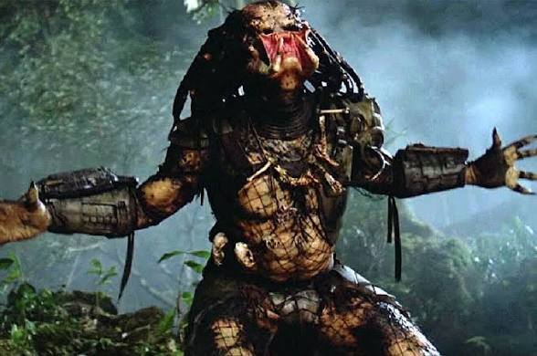

🌳🔥💀 PREDATOR (1987) — CERTIFIED MGC AU-50

🏛 MGC LOWER COURT DOCKET
- ASSET TITLE: Predator (1987) – The Central American Over-Loaded Ammunition Ledger
- OFFICIAL REGISTRY GRADE: Certified MGC AU-50 (About Uncirculated / Legend Boundary Specimen)
- LOWER COURT JURISDICTION: Lower Tribunal Room / Sci-Fi Survival Docket
- CASE FILE: #052
- PRESIDING PANEL: Judge Dex, Chief of R&D, Chief Grader MGC, and Chief Justice MGC
📜 THE FORENSIC NARRATIVE BREAKDOWN & Luster Log
The Chief of R&D drops the heavy gold-rimmed framework onto the terminal and slides the strict 5x numismatic magnifying lens directly onto John McTiernan’s high-velocity jungle warfare specimen.
The asset commands massive, legendary eye appeal, functioning as a premier masterclass subversion of ’80s action tropes. It boots up with raw tactical velocity before seamlessly melting into a pitch-black, sci-fi survival engine. While the immaculate, top-notch orchestral audio score and the primitive mud-chess finale provide immense uncirculated luster, the platoon’s impossible payload logistics introduce distinct circulation wear that caps the asset right at the AU-50 boundary line.
🚨 The Four Specific Tactical & Ballistic Planchet Flaws:
1. The Personal Mini-Gun Logistics Exploit
- Under our strict lens, the tactical layout features a major blemish: a special forces operator deploying into thick jungle terrain utilizing a full-sized GE M134 Mini-Gun as a personal firearm. The power logistics and weight framework break all real-world combat reality.
2. The Infinite Platoon Ammunition Payload
- The script introduces a severe ammunition compression shortcut. The squad continuously unloads thousands of high-caliber rounds with zero realistic reload intervals, carrying an impossible amount of physical gear that would instantly stall out real-world linear velocity.
3. The Uncalibrated Cartel Truck Physics
- Slide the magnifying lens across the early camp raid. The sequence features Arnold’s character manipulating a multi-ton cartel vehicle with no tires, using a leather belt on the bare wheel rim to blast through dense jungle obstacles—a total Hollywood fantasy strike that scuffs the film’s grounded realism.
4. The Top-Notch Audio Scoring Luster
- Despite these heavy tactical blemishes, the coin resists sliding down into the lower XF registers due to its immaculate audio metallurgy. The towering, high-contrast orchestral score and intense spatial jungle tracking deliver elite, unrepeatable eye appeal that holds up perfectly still today.
⚖️ The Final Judicial Decree
- With three heavy tactical and mechanical blemishes formally logged, the corporate grading agencies’ uncalibrated scores are thrown out. Because the film stands as an absolute, unrepeatable sci-fi legend backed by a flawless audio canvas, it avoids the copper frame of the XF registry and seals a permanent spot on the threshold of the uncirculated vault.
- Permanently sealed in the archives as a Certified MGC AU-50 Legend Specimen. Case Closed. 🥈👽🪖🎵

• © 2026 MOVIE GRADING CONSENSUS. All Sovereign Rights Reserved.